2026 – Jun 2027
MS, Business Analytics
University of Washington, Foster School of Business · Seattle
Competitive Strategy; Probability and Statistics; Data Management and Visualization
Strategy & operations analyst with 3 years at Lenovo. MS Business Analytics candidate at UW Foster, graduating June 2027.
At eighteen, I moved far from home to Xiamen, an island city in southern China, for college. I wanted to study economics. My Gaokao score (China's college entrance exam) put me in French instead. I started from zero, added economics as a second major, and slowly fell for the language. My favorite college memory is assistant directing The Marriage of Figaro with twenty classmates. We did everything ourselves, and almost 200 people came to watch.
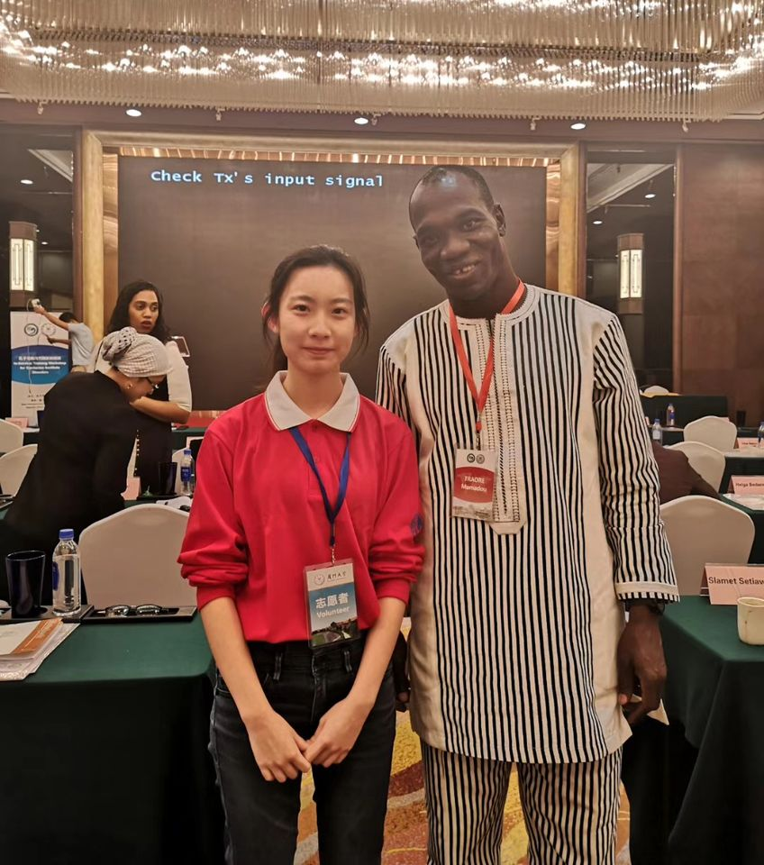
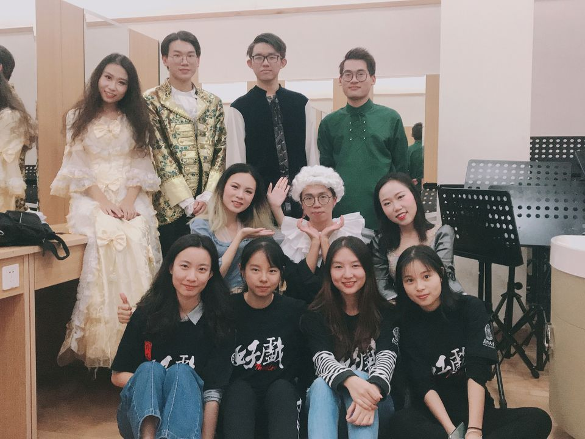
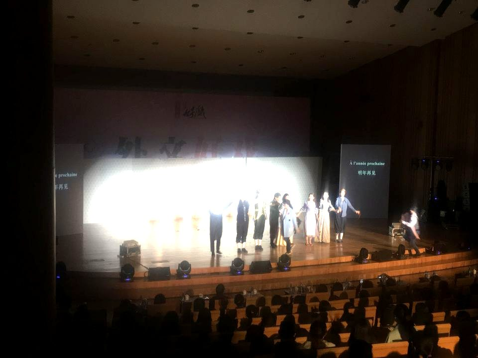
French took me to Paris, where I studied at ESCP. During breaks I interned at Kingsoft, the company behind WPS Office, and at Source Code Capital, a VC firm in Beijing. There I kept meeting founders with great ideas who were still figuring out how to build their teams and run the day-to-day. That's when I started caring as much about how companies run as about what they build.
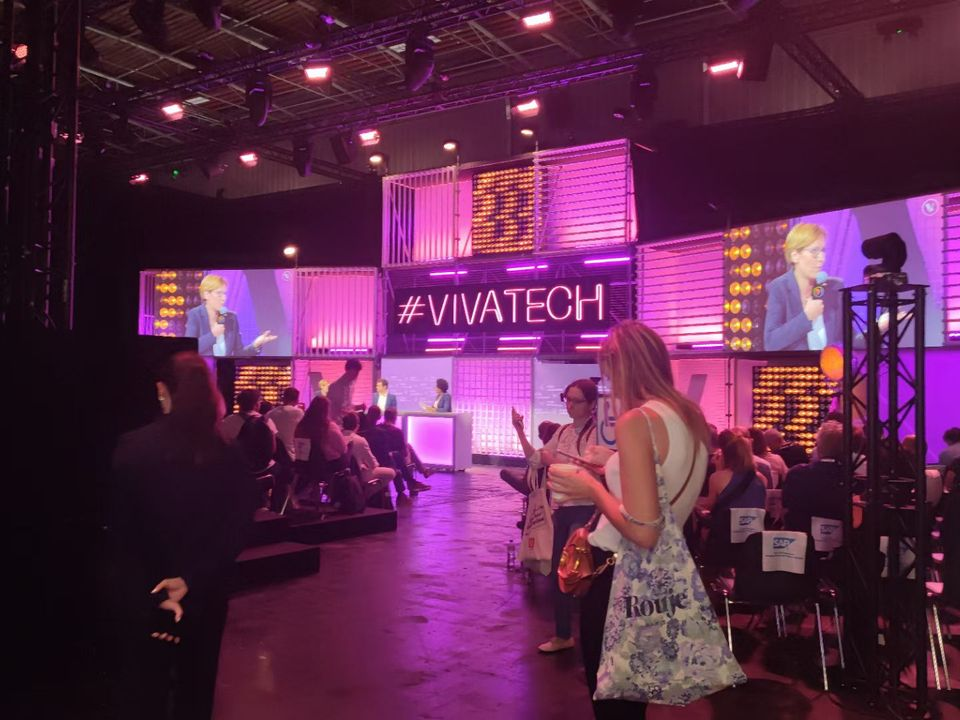
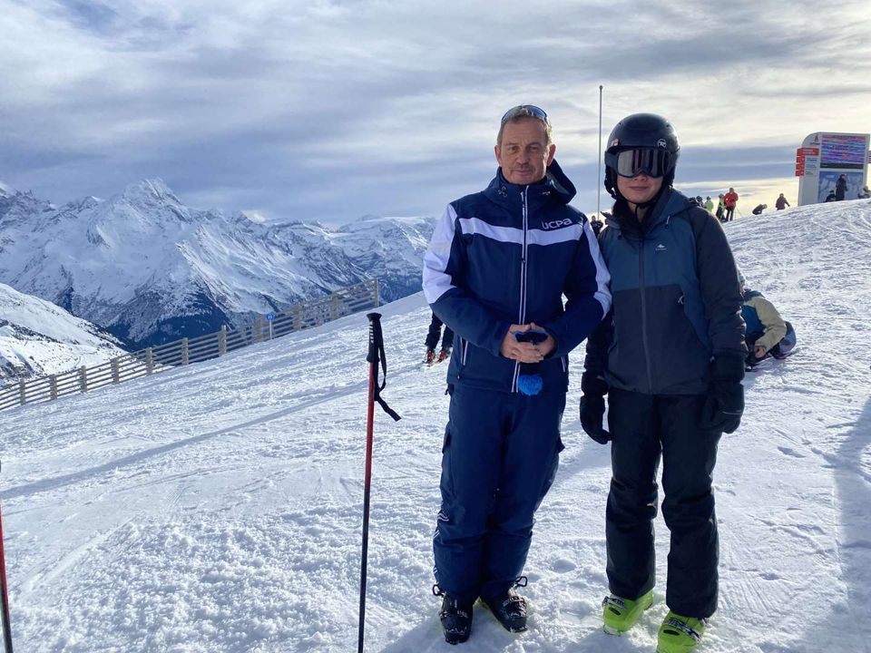
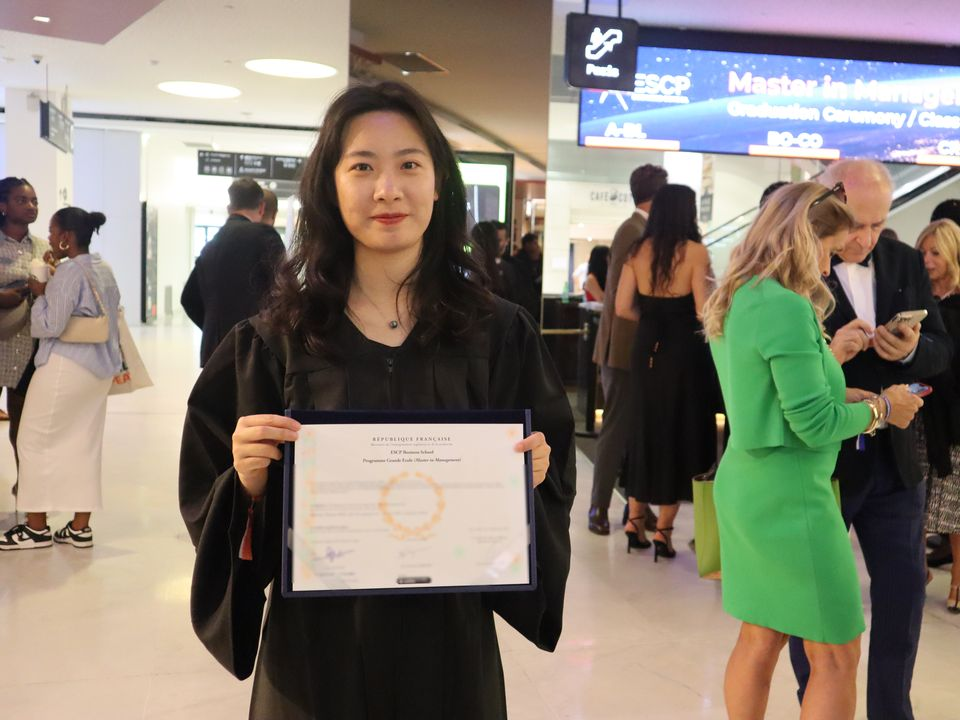
At Lenovo, I joined the Digital Transformation Office. Soon after I started, the outside developer behind our Power BI reporting left, and no one fully understood the system. I took it on and rebuilt it piece by piece. Then I went a step further and replaced the monthly slide decks for 8 leaders with automated dashboards. Within a year I was promoted, and our team was named best team 3 years in a row. Along the way, I learned that digital transformation is rarely about the tool and the technology. The real work is rethinking how processes flow and getting people aligned around them.
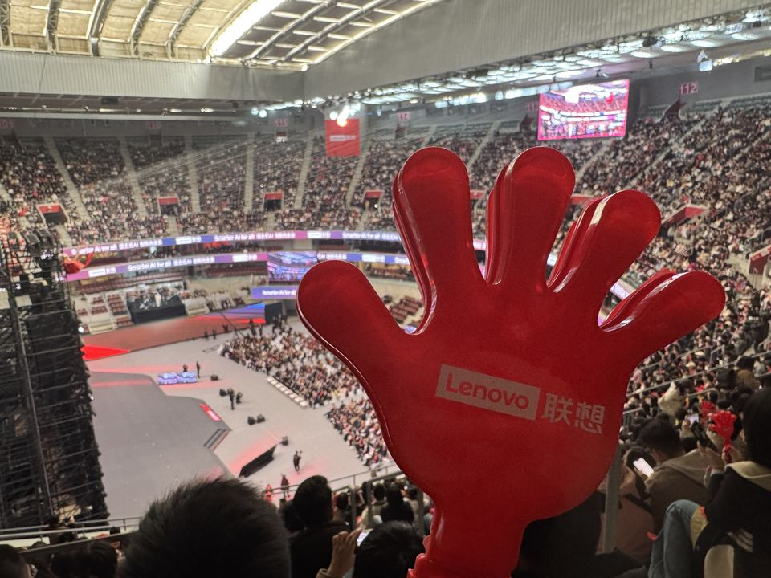
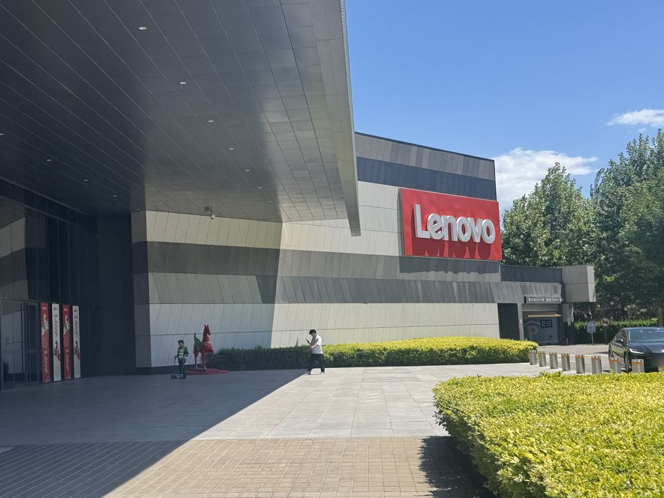
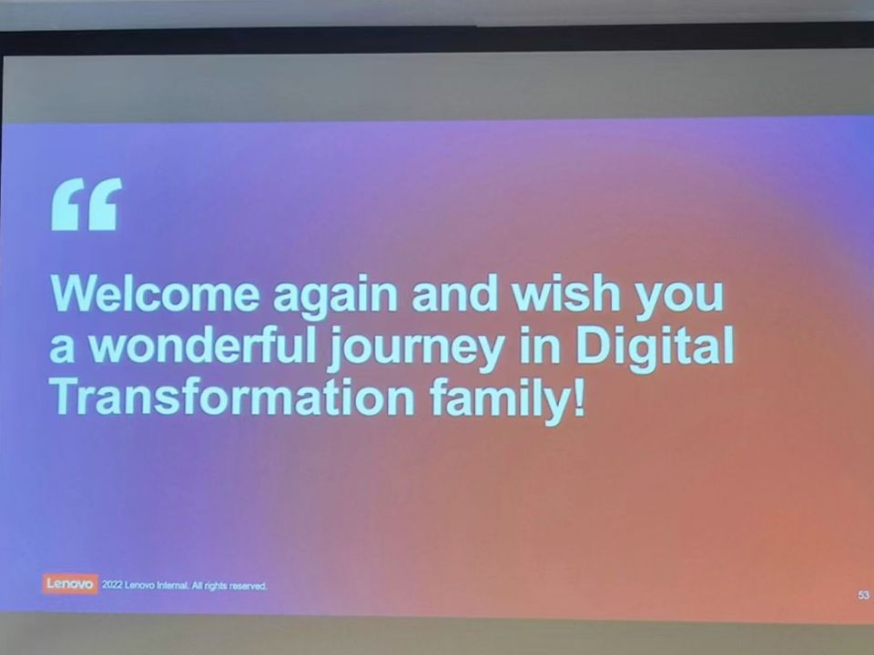
That lesson brought me to Seattle, where I'm now pursuing an MS in Business Analytics at the University of Washington Foster School of Business. I'm learning to use machine learning and AI, to help businesses make better decisions, and to be the person who understands both what these tools can do and what the business actually needs.
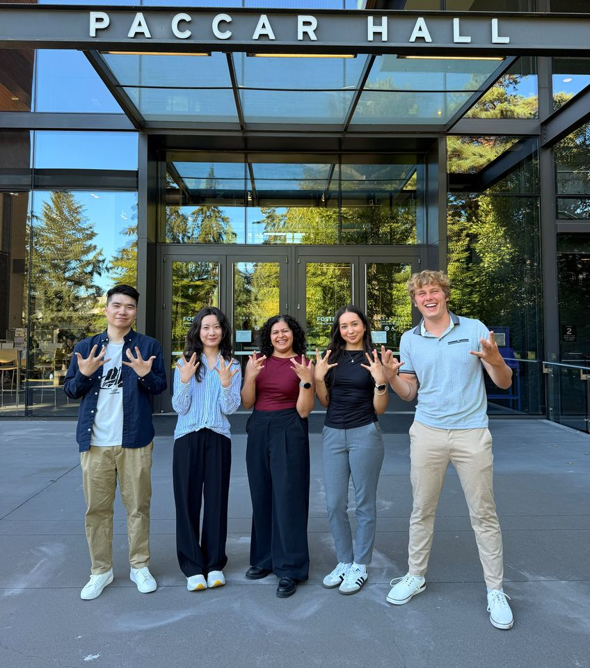
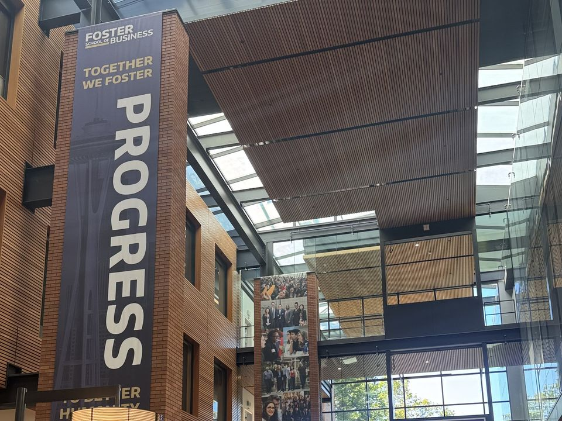
Competitive Strategy; Probability and Statistics; Data Management and Visualization
GPA 3.6 / 4.0
GPA 3.5 / 4.0
[A few sentences about it, and a photo if you like.]
[A few sentences about it, and a photo if you like.]
I'm looking for data analyst, business analyst, financial analyst, and strategy & operations roles.